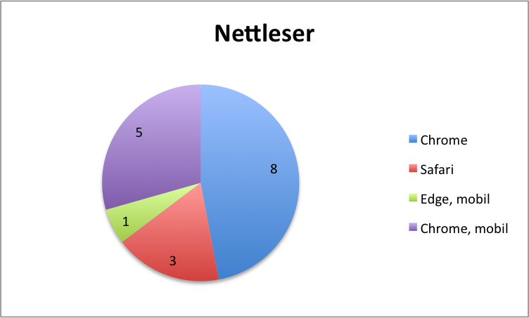

Administrative detaljer
- Klientenes navn: Magnus og Monica
- Kontaktperson: Monica Darvik
- Navn på nettsiden: Magnus & Monica
Brukerundersøkelse
Spørsmålene til denne undersøkelsen ble valgt ut med hensikt å sjekke alle usikre områder ved nettsiden, samt samle generell informasjon om brukernes inntrykk av nettsiden. Vi tok utgangspunkt i disse spørsmålene da vi live-testet nettsiden vår:
- Hva er ditt førsteinntrykk av nettsiden?
- Ser du hvor lenge er det igjen til vielsen?
- Klarer du finne veibeskrivelsen til bryllupsfesten?
- Klarer du å finne ut hvor du kan kjøpe krusene paret ønsker seg?
- Klarer du å finne ut hva slags mat de serverer?
- Fyll ut RSVP-skjemaet.
- Klarer du å komme deg tilbake til hjem-siden med færrest mulig klikk (siden som lastet da du først åpnet nettstedet)?
- Føler du at siden ga deg nok informasjon om bryllupet?
- Har du noen forslag til forbedringer?
Testpersoner
Våre testpersoner dekker en vid rekke aldere, ettersom målgruppen for nettsiden er alle bryllupsgjester. Siden mange av bryllupsgjestene kommer til å være venner og søskenbarn av kunden, som selv er 25 år, har vi testet en del i aldersgruppen 20-29 år. Vi har også testet en 57-åring og en 80-åring fordi tanter, onkler og besteforeldre også er invitert.
Alle testpersoner har blitt live-testet, slik at vi har fått maksimalt utbytte av hver test. Vi skulle gjerne ha testet flere personer i alderen 40-60, men det var vanskelig å finne testobjekter i den aldersgruppen som ville teste live.


Testplatformer
Våre testobjekter fikk velge selv om de ville teste nettsiden på pc/mac eller mobil. De fleste testet nettsiden på pc eller mac, noen gjorde begge deler. Grafen under viser nettleseren som ble brukt.
Oppsummering av tilbakemeldinger
A summary of the feedback you received organized by question type (design, navigation, content, usability, etc.). Highlight both positive comments and thoughtful criticism, your client's testimonial, etc.
Vårt svar på tilbakemeldingene
Provide your response to the feedback. Concretely, describe what you could do (once the class is over) to address this feedback with changes in your design or implementation. You can also address why some of the raised issues or suggestions for improvements are difficult or impossible to tackle.
Selvrefleksjon
Alle på gruppen syns det var artig å få brukt faglig stoff til et selvvalgt prosjekt vi hadde interesse for. Vi brukte en del tid på å planlegge nettsidens design og stusset litt på hvorfor det måtte gjøres så grundig, men skjønte i del 3 av prosjektet at det gjorde kodingen mye enklere. Siden all planleggingen var gjort på forhånd, var det mulig for for oss å fordele arbeidet og kode hver for oss uten at vi fikk fire forskjellige design på nettsiden. Når det gjelder kontakt med kunden, ser vi viktigheten av å ha en god dialog med kunden og å gi en statusoppdatering underveis i prosjektet slik at vi ikke ender opp med et produkt som ikke tilfredstiller kundens krav.
Vi er overasket over hvor mye man kan få til med bare HTML, CSS og Javascript. I tillegg til grunnleggende HTML har vi lagd funksjoner som gjør nettsiden dynamisk og litt mer spennende. Det har dessuten vært svært praktisk med modulær kode. Vi lærte oss å bruke Git i løpet av prosjektet ettersom Google docs og Dropbox kom til å bli tungvint i lengden. To ganger i løpet av prosjektet hadde vi ekstremt lyst til å bare knuse pc'n på grunn av Git, men bortsett fra de gangene har vi bare hatt positive erfaringer. Selv om Git kan være bra, er det fint med en backup på pc'n.